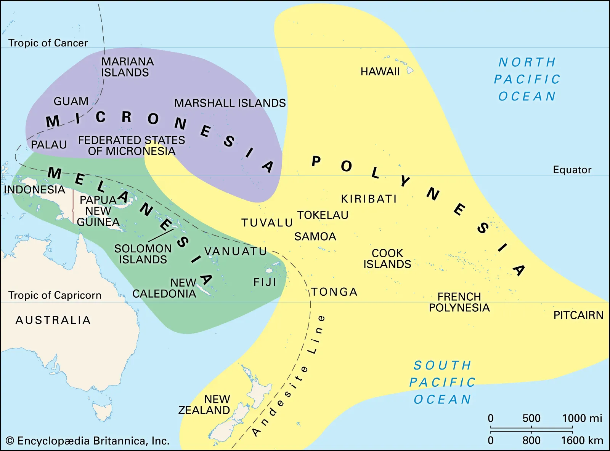
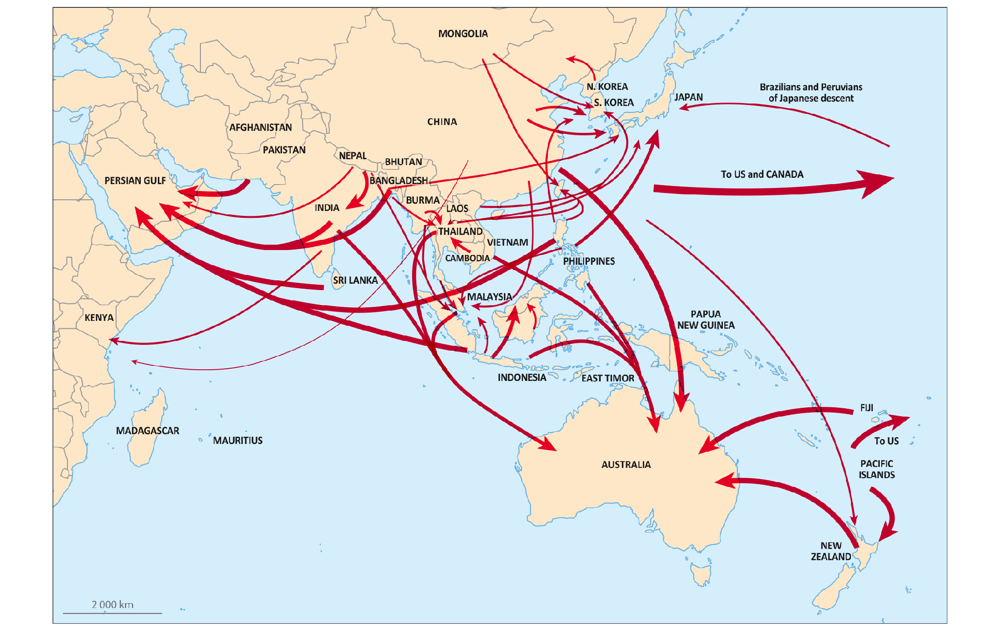
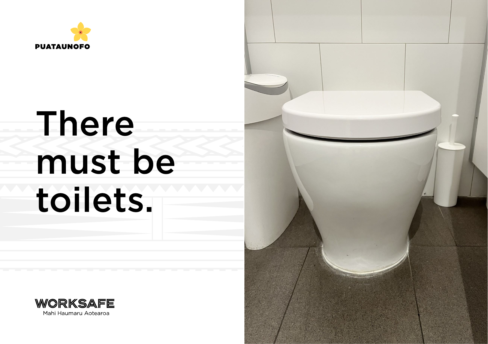
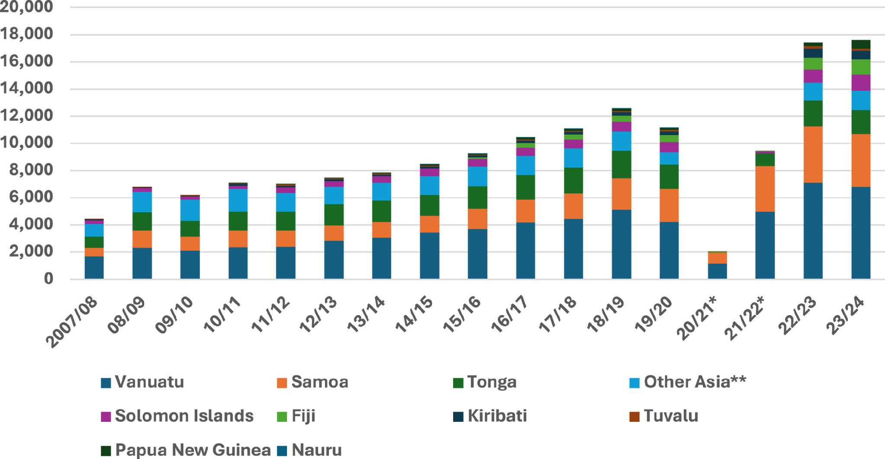

A
Understanding the Group
Who are they? Where from? History & culture
- Mainly from Pacific Island countries and Asia (INZ, n.d.-c)
- Come to New Zealand to work in horticulture and viticulture (NZ MFAT, n.d.)
- The first settlers of the Pacific Islands are thought to have crossed from West Australia to Papua New Guinea about 40,000 years ago (NHM LA, n.d.)
- Human movement east of Papua New Guinea began with seafarers from southern China about 5,000 years ago (NHM LA, n.d.)
- They brought plants and animals in outrigger canoes, and thrived (NHM LA, n.d.)
- Three cultural groups: Melanesia, Micronesia and Polynesia (Foster, 2026)
- Ethnic diversity varied across the islands, as different terrain shaped how people interacted (Students of History, n.d.)


Why do they move?
- To develop skills, earn higher wages and “remit these earnings back to their communities in the Pacific” (NZ MFAT, n.d.)
- They stay for a 7–9 month period, then go home between seasons (NZ MFAT, n.d.)
- At home they can't find the same opportunities, pay and skills offered by the RSE programme (Bedford and Bedford, 2025)
- Skills include English, financial literacy and life skills, as well as more advanced training
- With the money they earn, RSE workers support their home economies by investing in businesses and contributing to the community (Bailey, 2019)


B
Immigration Policies & Rules
Programme & visa
The Recognised Seasonal Employer Scheme (Pitt & Moore, n.d.) and the Recognised Seasonal Employer Limited Visa (Immigration NZ, n.d.-c).
Requirements (INZ, n.d.-c)
- 18 or older
- Citizen of an eligible Pacific nation, unless agreed otherwise with Immigration New Zealand
- A job offer from a Recognised Seasonal Employer
- Full medical insurance for their stay
- Good health
- Good character
- A genuine reason for coming to New Zealand
Rights & responsibilities
- Employers must provide a written contract covering pay, holiday pay, work hours, sick leave, work conditions, 50% of the return airfare, accommodation and employment rights (INZ, n.d.-a; INZ, n.d.-d; CAB, 2025)
- If there is a problem with the employer, the worker can talk to their employer, follow the disputes process in their work agreement, and contact MBIE (CAB, 2025)
Length of stay & status
- 7 months in any 11-month period; 9 months for citizens of Tuvalu and Kiribati (INZ, n.d.-c)
- May be able to apply for a further RSE Limited Visa to keep working for the time remaining (INZ, n.d.-c)
- Cannot apply for permanent residence, as they don't hold a residence visa (INZ, n.d.-b)
Systemic barriers
Language barriers
Limited English makes it hard to understand contracts, payslips and complaints. (Fuatai, 2023)
Visa restrictions
Workers can't leave their employer or apply for another visa. (INZ, n.d.-c)
Costs
Costs such as insurance are deducted from pay. (INZ, n.d.-a; INZ, n.d.-d)
Family separation
Family can't come, which strains relationships. (Bedford et al., 2020)
C
Experiences & Challenges
Challenges before RSE
- Pre-departure costs: visa, documents and more (INZ, n.d.-d)
- Travel and transit: hard to navigate; travel costs including 50% of airfare and food/accommodation on the way (INZ, n.d.-d)
- Understanding English: contracts and payslips use advanced English, which can cause complications (INZ, 2026)
Challenges in New Zealand
- English barriers
- Hard to understand contracts, payslips, etc. (INZ, 2026)
- Safety hazards, lower productivity, less collaboration (Par, 2026)
- Worker exploitation (Buckett, 2022)
- Because of language barriers, misleading contracts or payslips could push workers into illegal situations
- Worker advocates say RSE “is a vehicle for worker exploitation, human rights abuse and promotes bad employment behaviours”


Support organisation: WorkSafe
- Creates posters, videos, factsheets and more on the safety and rights of workers (WorkSafe NZ, n.d.)
- Investigates working conditions (WorkSafe NZ, 2025)
“There are now seven men in my bedroom. It's too much, all snoring and farting and we can't open the window because it's too cold. I brought myself a mattress, I'm moving to the lounge…”
D
Effects on Countries & Communities

Contributions
- Benefits the horticulture industry by speeding up planting, maintaining, harvesting and packing crops (NZ MFAT, n.d.)
- Taxes and spending support the economy (Bedford and Bedford, 2025)
- Workers take part in local communities mainly through church, sport and local events (Nunns et al., 2019)
- Viewed as regular, temporary residents (Nunns et al., 2019)
Challenges for New Zealand
- Biggest challenge: accommodation (Bailey, 2018)
- Some regions have housing shortages and high rent
- Reports show workers placed in overcrowded, substandard housing at high rates
- Worker welfare
- Employers hold a lot of power over workers (Laki, 2026; INZ, n.d.-a)
- This could force workers into bad conditions or violations of their rights
Balancing policies
20,750worker cap for the 2024/25 season, balancing local labour markets with industry needs (Stanford and Peters, 2024)
30 hrsminimum weekly pay guaranteed (INZ, n.d.-d)
E
Potential Policy Change
Proposed change: a better RSE system
1
Workshops on skills and essential knowledge
- Teach workers important skills such as farming, English and how the New Zealand system works
- Workers are expected “to raise it [problems] with their employer” (Fuatai, 2023), but this needs English and system knowledge they may not have
- Workers return home with more knowledge to apply in their communities
2
Change employers through a request form
- “Issues sit with ‘a few bad apples’ – a small number of employers who abuse the system” (Fuatai, 2023)
- Letting workers change employers makes the “bad apples” easier to find
3
Clearer contract rules and expense trackers
- Employers must create a budget showing exact cost deductions and the reasons for them
- This gives workers more clarity on their deductions